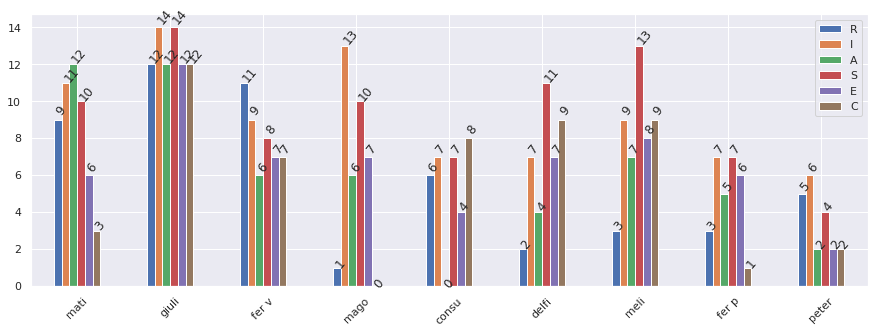

Corrección y Análisis en Orientación Vocacional

Recordá abrir en una nueva pestaña
Corrección y Análisis en Orientación Vocacional¶
En esta notebook analisamos y exploramos resultados del test Holland para orientación vocacional:
import pandas as pd
import numpy as np
import seaborn as sns
import matplotlib.pyplot as plt
sns.set()
# My answers
circuladas = '1,2,3,4,8,9,10,13,14,15,16,19,20,22,23,24,25,26,27,28,29,30,31,32,33,34,43,44,45,46,47,51,52,53,56,57,58,61,62,63,68,70,71,73,74,75,79,81,87,89,90'.split(',')
categorias = 'R,I,A,S,E,C'.split(',')
puntajes = {cat: len([p for p in circuladas if int(p) in [i for i in range(categorias.index(cat) + 1, 91, 6)]]) for cat in categorias}
puntajes
{'R': 9, 'I': 11, 'A': 12, 'S': 10, 'E': 6, 'C': 3}
# Some sample data
nombres = 'mati, giuli, fer v, mago, consu, delfi, meli, fer p, peter'.split(', ')
data = np.array([
[9, 11, 12, 10, 6, 3],
[12, 14, 12, 14, 12, 12],
[11, 9, 6, 8, 7, 7],
[1, 13, 6, 10, 7, 0],
[6, 7, 0, 7, 4, 8],
[2, 7, 4, 11, 7, 9],
[3, 9,7,13, 8, 9],
[3, 7, 5, 7, 6, 1],
[5, 6, 2, 4, 2, 2]]
)
df = pd.DataFrame(data, columns = categorias, index = nombres)
df.describe().round(1)
| R | I | A | S | E | C | |
|---|---|---|---|---|---|---|
| count | 9.0 | 9.0 | 9.0 | 9.0 | 9.0 | 9.0 |
| mean | 5.8 | 9.2 | 6.0 | 9.3 | 6.6 | 5.7 |
| std | 4.0 | 2.9 | 4.0 | 3.2 | 2.7 | 4.2 |
| min | 1.0 | 6.0 | 0.0 | 4.0 | 2.0 | 0.0 |
| 25% | 3.0 | 7.0 | 4.0 | 7.0 | 6.0 | 2.0 |
| 50% | 5.0 | 9.0 | 6.0 | 10.0 | 7.0 | 7.0 |
| 75% | 9.0 | 11.0 | 7.0 | 11.0 | 7.0 | 9.0 |
| max | 12.0 | 14.0 | 12.0 | 14.0 | 12.0 | 12.0 |
sns.set(rc={'figure.figsize':(15,5)})
ax = df.plot.bar()
for p in ax.patches:
ax.annotate(str(p.get_height()), (p.get_x() * 1.0, p.get_height() * 1.04), rotation=50)
plt.xticks(rotation=45);

import plotly.offline as py
import plotly.graph_objs as go
from plotly.subplots import make_subplots
data = [go.Scatterpolar(
r = df.iloc[i].values,
theta = df.columns,
fill = 'toself',
name = df.index[i],
hovertemplate = '%{r}'
) for i in range(df.shape[0])]
layout = go.Layout(
polar = dict(
radialaxis = dict(
visible = False,
)
),
showlegend = True
)
fig = go.Figure(data=data, layout=layout)
py.iplot(fig, filename = "radar")
n_person = 0
serie = df.loc[:, list('AIRCES')].iloc[n_person]
tipo = serie.idxmax()
diferenciacion = serie.max() - serie.min()
fig = make_subplots(rows=1, cols=2,
specs=[[{"type": "xy"}, {"type": "polar"}]])
fig.add_trace(
go.Scatterpolar(
r = serie.values,
theta = serie.index,
fill = 'toself',
name = serie.name,
hovertemplate = '%{r}',
hoverlabel = dict(font=dict(size=20)),
),
row=1, col=2
)
serie.sort_values(ascending=False, inplace=True)
fig.add_trace(
go.Bar(
x= serie.index,
y= serie.values,
hovertemplate = '%{y}',
hoverlabel = dict(font=dict(size=20)),
name = serie.name,
marker={'color':serie.values, 'colorscale': 'Blues'}
),
row=1, col=1
)
fig.update_layout(
polar = dict(
radialaxis = dict(
visible = False,
)),
title = go.layout.Title(
text = f'Diferenciación: {diferenciacion} \n Tipo: {tipo}',
xref = "container",
x=0.5),
title_font=dict(
size=40),
font=dict(family='Courier New, monospace',
size=18,
color='#7f7f7f'),
showlegend = False
)
py.iplot(fig, filename='/home/matias/Matias/OVO/holland_plot.html')